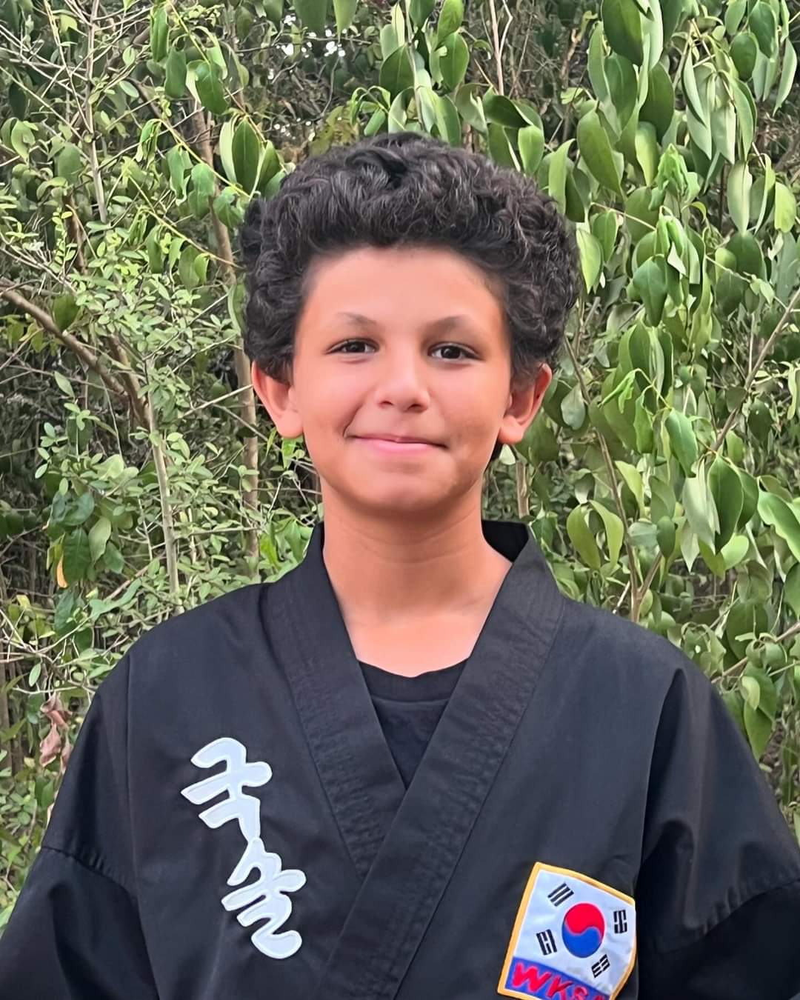
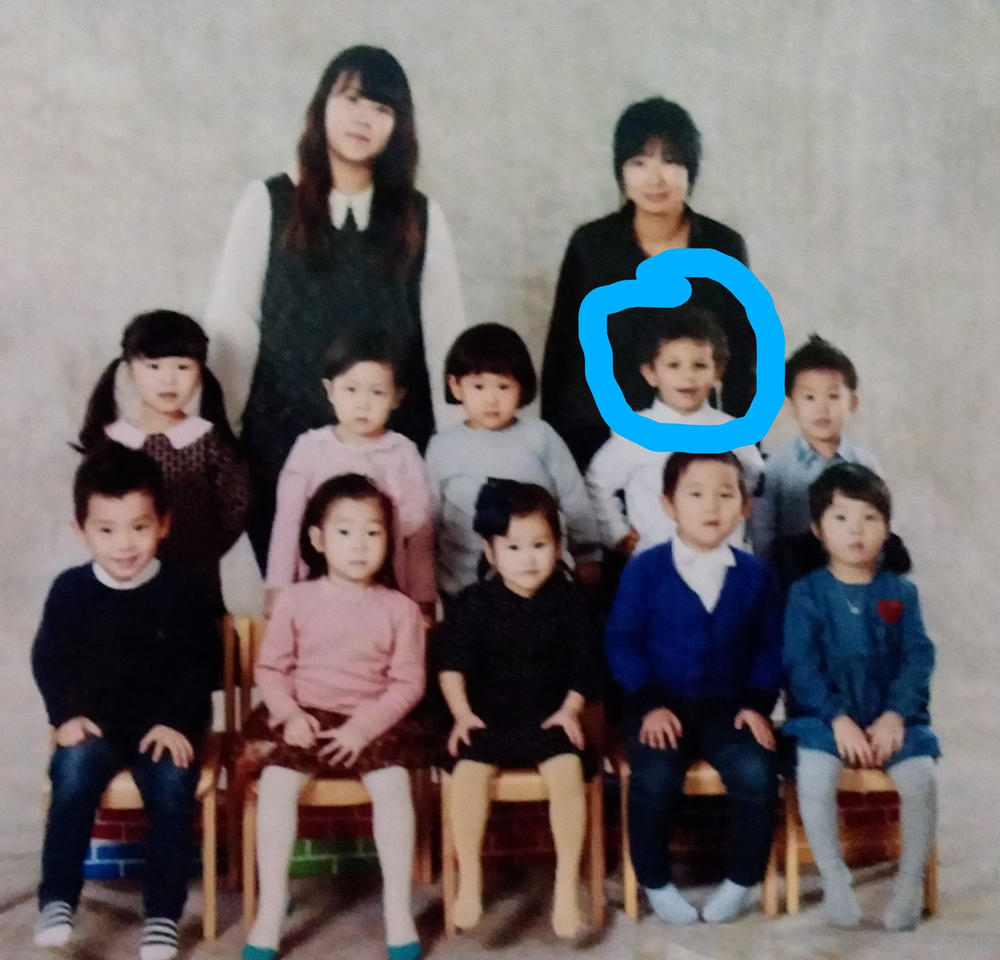
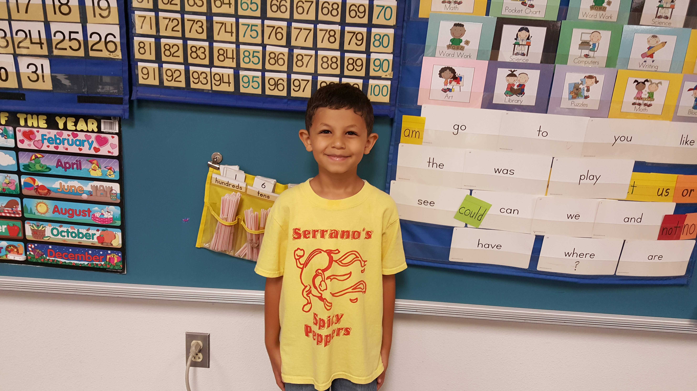
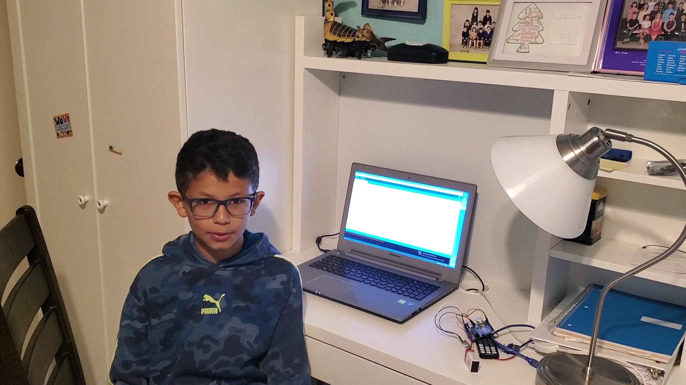
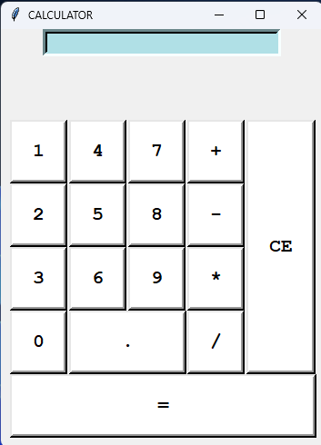
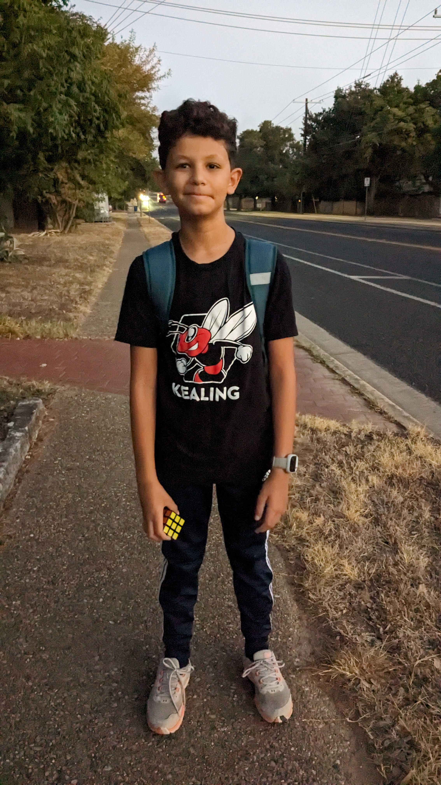
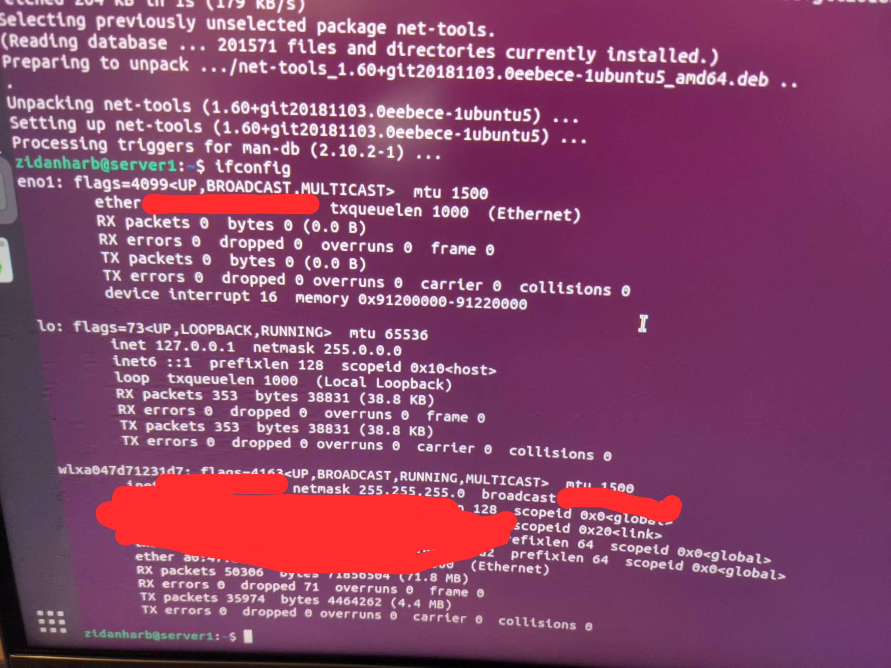
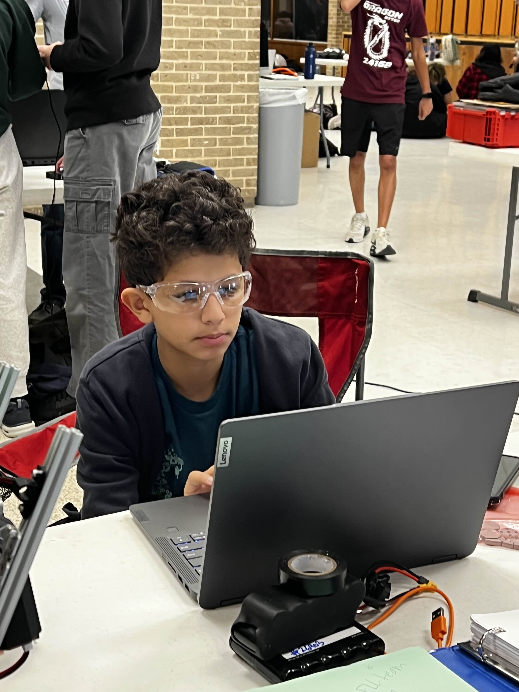
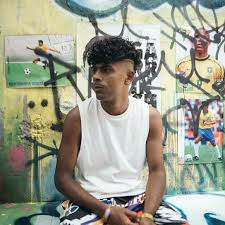
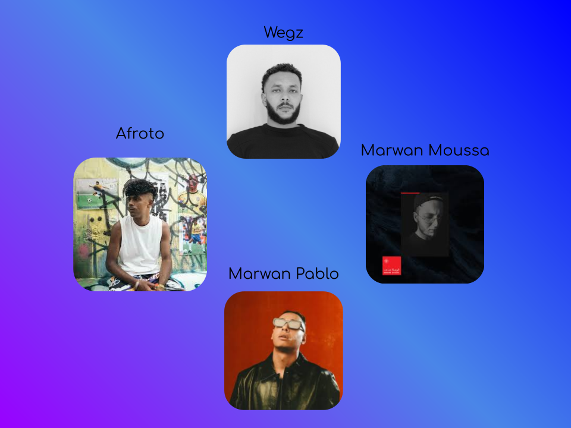

Who am I?
My name is Zidan Harb, also known as Zarcotech in the online world. I am a young passionate programmer and cybersecurity developer, ready for any challenges coming in front of me.
My promotion picture to black belt (2024)
First years
I was born in Poughkeepsie, NY on August 27, 2012. I soon moved to Seoul, South Korea where I was raised for 4 years. In these four years, I developed a fluent speaking in Arabic (Egyptian Dialogue), which is my parents first language since they are both from Egypt. I also learned Korean due to my Korean community.
My Preschool Class Picture (2015)
Moving into a new community
In 2017, I moved back to the United States, settling in Austin, Texas with my family. I started Pre-K 4 at Mills Elementary School, where I met many new people, different in language and culture. Throughout the next few years of elementary school, I learned English, which I am now fluent in and certified by the TELPAS test to have passed the aspects of English in reading, writing, listening, and speaking. It was a challenge at first, but I soon adapted to the new environment and made many friends along the way. I felt super supported by my teachers, which I am thankful for.
Last Day of Kindergarten (2018)
Early Programming
In 1st grade, my parents enrolled me in a programming class in an after school program, where I entered the cyber world of coding. I learned the basics and logic of programming through Scratch, a block programming UI. I continued to passionatly use this as a source of fun in my free time. Over time, I fell in love with the logic of programming and started creating more content on Scratch. My father worked at Siemens, and he often worked at home. I would enjoy watching him code in Tcl and running a program called Calibre that provided a CAD type of software that you can use to design semiconductors and chips. I was fascinated by this, and I wanted to learn more about programming. I would watch my dad work while asking questions about what he was doing. He would explain the logic behind what he was doing and what he was trying to achieve in a suitable way for my age. This sparked my interest in learning more about programming.
Me explaining a C++ code snippet for a GT project (2020)
COVID-19
In late 2rd grade in March of 2019, COVID-19 struck the world, and made impact everywhere. Schools were forced to shut down, and we had to adapt to a new way of learning through virtual classes. This was a challenge for me, as I had to adjust to a new way of learning and interacting with my teachers and peers online via Zoom. However, I soon adapted to this new environment and continued to learn and grow. Since we never had in-person classes, my parents decided for us to move to Cairo, Egypt next to my grandparents as a temporary living just so we can get closer as a family. I had to have all my classes between the hours of 4pm to 12am due to the time difference, but I made it work. During this time, my mother found me in great boredom and sadness since I missed my friends and school. She found a programming series on YouTube by a young women named Neha teaching Python as a teenager on a channel called NPStation. At the time, the channel was super small with less than 700 subscribers. Now it currently 21K subscribers and is a huge community built by a person that had a dream at my age. This motivated to always be persistent and never give up. I started learning Python thorugh her videos, becoming fluent in these language. I created small projects, such as a calculator. I continued to learn Python using a library called Tkinter (also known as Tk), built on Tcl. I used this video, made by Codemy.com, to learn Tkinter usage. I built UI applications passionatly. This was a huge jump for me. I was now learning a text-based programming language, and I was loving every bit of it. I even savored every bit of HTML, CSS, and JavaScripy, becoming my main languages to program in.
My first Python Tkinter Calculator App (2021)
Going into Kealing Middle School
I graduated from Mills Elementary School in May of 2023, and started my journey into middle school by applying and enrolling at Kealing Middle School in Austin, Texas. I was excited to start this new chapter in my life, and I was ready to take on new challenges and opportunities.I also took advanced classes in math and science, which helped me develop my problem-solving skills and critical thinking abilities. I met a lot of new friends, leading me to new ways of thinking and socialization.
First Day of 6th Grade at Kealing Middle School (2023)
My Leap
I started 7th grade with some curiosity on how to make a website online in a professional way. I talked with my dad a bit on it, but I was still confused on one part. How does a domain get registered with a specific person. That's when I stumbled across a new friend. He taught me and helped me setup a server using Ubuntu Linux 22.04.5 LTS. I also bought my first domain called zarcotech.xyz (now deprecated, so it won't load). I learned how to use DNS configurations on Cloudflare, and using a reverse proxy tool called Nginx (pronounced "Engine-X") to get my online local websites onto my domain. This was a huge leap for me. I was now hosting my own websites online, and I was loving every bit of it. I continued to learn more about web development, cybersecurity, and server management. I even started learning about ethical hacking and penetration testing in 8th grade, which fascinated me.
Installing Ubuntu Server on my PC (2025)
Joining FTC
FIRST is a non-profit organization that hosts robotics competitions in several levels, aimed to inspire young minds with robotics and engineering. I previously joined a FIRST Lego League (FLL) team that a local community center hosted. In 2024, I started a FIRST Tech Challenge (FTC) with a few previously known members of the FLL team we had. We named our team the team Cyber Salam, which translates to "Cyber Peace", reflecting terms of peace while in competition. We program our robot in Java using Andriod Studio and the FTC SDK, and we use resources from companies such as GoBilda and REV Robotics. Our first year as a rookie team went great! We built good popularity and relationships with other teams in our competition including Qubit Bots and Cosmobotics. We made it until the Semi-Area Regional Competition. Overall, our first year went excellently. I now continue to lead the team as a lead programmer and driver for the team.
Me working on code during the league competition (2025)
Discovering New aspects
In early January of 2025 while writing an essay for school, I decided to search for any Arabic Hip-hop artists to cover my boredom and plainness while writing. I first stumbled across Wegz, who is a very popular Egyptian artist that has major hits such as "Dorak Gai" and "El Bakht" at the time. I started a playlist of my favorite songs of his on Spotify. As I continued to search, I found many other artists such as Marwan Moussa, Afroto, and Marwan Pablo. These 4 artists are what I call the "Big 4", as they are many other artists I enjoy, such as Mond, Abyusif, and Hala, but these cover most of my playlist.
My favorite Arabic Hip-hop Artist: Afroto
A graphic showing the 'Big 4' Arabic Hip-hop Artists
So, Who Am I?
My name is Zidan Harb. Interested in programming, cybersecurity, and the future of tech. A lifelong learner, always curious and ready for new challenges.
While I constructed this project, I found myself reflecting on myself throughout a long journey from moving into a new community as a shy toddler, to a full stack frontend developer.
I noticed that I have been through many speed bumps, but I always managed to slow down and overcome it.
I also realized I have been driven to where I am today by many people, including my family, friends, teachers, and mentors. I am thankful for everyone has given me everything to even the smallest push to the success I have currently.
I am excited for the future, and I am ready to take on the next of challenges and change.
A photo of me with the Golden Gate Bridge in the background (2025)